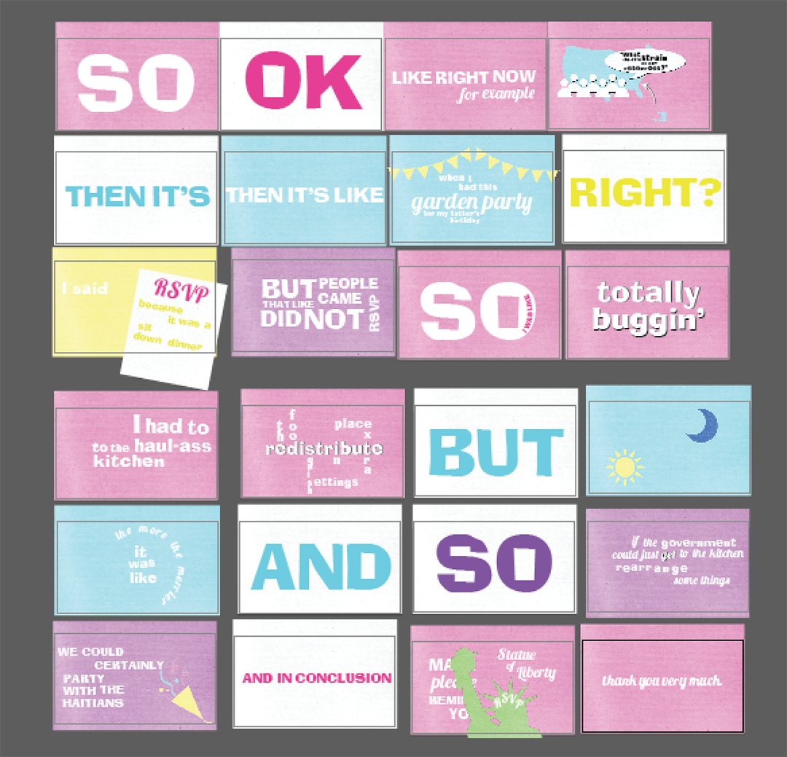

Clueless Kinetic Typography

Project Objective
Create a time-based kinetic type using speech from a movie, comedy or poetry performance
ProcessI selected a speech the character Cher gives in the movie Clueless about Haitians coming to America. I wanted my kinetic typography to reflect the same feel of the film, so I created a colour palette with the same bold tones that were seen in the movie, with a heavy influence on the colour pink. I chose fonts that were recreated to reflect the one used in the movie and another that I felt would pair nicely with the overall vibe of the audio/video.
Storyboards were created to map out the animations, and eventually those storyboards were translated digitally into Illustrator. From there, it was all about animating the text to match the audio in a fun way. This proved challenging at points because of how quickly Cher speaks. You can view the final video below or here.
